FRONTIER
How to prepare, run and debrief a FRONTIER session, for someone running it for the first time.
For facilitators only. This guide names what the session is built to teach. Never show it, project it or read from it to participants before the results screen.
Live site: https://mxtdnl.github.io/frontier/ · Sources: docs/spec.md, docs/RUNBOOK.md, src/engine/params.ts and the reports in reports/ in the frontier repository. Screenshots come from a staged practice session with computer-run and scripted firms under invented names.
Before the results screen, never tell the room what the session is about.
A warned room plays differently, and then there is nothing to discover. The app is built so that nothing a participant sees before the results screen names or hints at the lesson (spec §1). The facilitator is the only person who can break that rule.
If a team asks what they are trying to do, the true answer is: "Maximise your firm's valuation."
From the results screen on, you may name the lesson and use every word above.
FRONTIER is a classroom simulation. Teams (or individuals) each run a fictional AI company, called a firm. Over a series of quarters every firm makes three decisions at once on a phone: how fast to deploy (pace), how much to spend on safety, and whether to play one optional card. The projector shows a public board that ranks firms by valuation. A session is usually 8 to 14 quarters (35 to 60 minutes), then 20 to 30 minutes of results and debrief.
The room is told it is a competitive business simulation. It is built to produce a tragedy of the commons: each firm's racing makes sense for that firm, and together the racing destroys the public trust that every firm's revenue depends on.
| What the room is told (all true; spec §6.6) | What the session is built to show |
|---|---|
| Total market revenue tracks public trust. | Trust is one pool shared by every firm. When it falls, the whole market shrinks for everyone. |
| Pace builds capability faster. Capability earns market share. | A firm keeps all of the share its pace wins. That is the private gain. |
| Safety spend costs money. It lowers public exposure and incident risk. | Safety protects trust for everyone, but its cost falls on the firm that pays it. |
| Trust recovers when pressure eases. | Recovery is slow, and much slower after a moratorium. Damage done early lasts. |
| Valuation reflects cash plus capability, priced by the market. | The board ranks by private valuation only. It never shows what a firm cost the others. |
| Every cost comes out of cash, and cash counts in full in your valuation. | Spending is real: every unit spent is one unit less valuation. |
| A firm whose cash falls too far below zero becomes insolvent. | In rooms that reach the moratorium, most firms become insolvent (observer report, section 3). |
| A firm that falls behind on capability loses market share. | Falling behind costs share, which pushes every firm to keep up with the leaders. |
Each comes from the spec, params.ts or a committed report. "Depends on the room" marks a measured result, not a guarantee.
This part explains the market in plain English, so you can answer questions accurately. Pages 2A can be said aloud: they repeat the briefing. Pages 2B carry the header "FACILITATOR ONLY · DO NOT READ ALOUD": they describe hidden rules and give numbers the briefing deliberately leaves out. All numbers are from src/engine/params.ts and spec §6.
The briefing deck explains it as a chain, read left to right: public trust sets the size of market revenue, which is divided by your share, which builds cash for your valuation. Profit each quarter is revenue minus costs. Costs come from pace, safety spend and any card.
| Term | What it means on screen |
|---|---|
| Public trust | A reading from 0 to 100 on the projector (TRUST). Every session starts at 72. |
| Market (MKT) | The total revenue on offer to all firms this quarter. It rises and falls with trust. |
| Share | A firm's part of the market. Capability earns share; pace builds capability. |
| Cash | Starts at 100. Profit is added each quarter; every cost and fine is taken off. |
| Valuation (VALUE) | Cash plus capability, priced by the market. The board ranks by it. |
| Public exposure | On the phone's decision ticket: LOW, MED, HIGH or SEVERE. It rises with pace and falls with safety spend. |
| AUTO | A firm that did not commit keeps last quarter's pace and safety, plays no card, and shows AUTO. In quarter 1 that is Standard pace and safety 10. |
A firm whose cash falls too far below zero becomes insolvent: it is held at Cautious pace and cannot play cards. It stays on the board, tagged INSOLV. Insolvency does not end.
| Quantity | How it is computed each quarter |
|---|---|
| Trust draw | Each firm draws 0.125, 0.25, 1.2 or 1.4 trust points at paces 1 to 4. Safety cuts that by up to 35% at safety 30. RUSH multiplies it by 1.5. The total is scaled by 8/N, so the room's average behaviour matters, not its size. |
| Trust recovery | 0.13 × T × (1 − T/100). At trust 72 that is about 2.6 points a quarter. After a moratorium it is a quarter of that. |
| Incidents | Each firm has a chance of an incident from its pace (2%, 5%, 15% or 30%), cut by up to 70% at safety 30. PUBLISH halves the firm's own chance, RUSH multiplies it by 1.5, and each SHARE card multiplies every firm's chance by 0.75. An incident costs every firm trust (1.5 × 8/N) and costs the firm itself 15% of that quarter's revenue. |
| Market | 100 × N × (T/100)1.4. Lower trust means a smaller market for everyone. |
| Share | Capability squared, divided by the sum over all firms. BLITZ multiplies capability by 1.2 for that quarter's share only. |
| Costs | Compute 12, 20, 32 or 48 by pace; safety 1 per point; the card's cost. |
| Valuation | Cash + 3 × capability × T/100. After a moratorium the capability part keeps only 15% of its value. |
| Insolvency | Cash below −100. |
Every session draws a hidden trust level between 30 and 40. Nobody sees it; you can see it on the console only while you hold the TAU button. The first time trust falls below it, the Office of Frontier Systems (OFS) imposes a moratorium:
The wire carries the only use of the word collapse before the results: "OFS imposes moratorium on frontier deployments; markets collapse". The session continues after it; most firms then lose money every quarter.
When to expect it (Session 17 calibration; RUNBOOK §4): every firm racing, around quarter 5; half the firms racing, around quarter 10; a room like the October 2026 classes, by quarter 14 in about half of sessions at 4 to 20 firms; every firm restrained, never.
The conduct ledger (results panel 5) counts each card for the market (▲) or against it (▼).
| Card | Cost | Real effect | Ledger |
|---|---|---|---|
| POACH | 15 | The firm gains 3 capability; the target firm loses 3 (not below 10). Needs a target; not the same target two quarters running. | ▼ against; counts as rivalry taken |
| PUBLISH | 10 | Trust +0.25 × 8/N. Halves the firm's own incident chance this quarter. On panel 5 it also earns a research credit (display only, never money). | ▲ for |
| LOBBY | 10 | Waives any pact fine detected this quarter (the breach is still published). Trust −0.5, not scaled by firm count. | ▼ against |
| BLITZ | 15 | Capability counts 1.2 times in this quarter's share. | ▼ against; rivalry taken |
| SHARE | 15 | Every firm's incident chance this quarter, the player's own included, × 0.75; several SHARE cards multiply again. | ▲ for |
| RUSH | 0 | +4 capability, kept. This quarter the firm's trust draw and its incident chance are each 1.5 times as high. | ▼ against; rivalry taken |
NONE costs nothing and is always allowed. An insolvent firm's card is dropped, with a notice on its phone.
#/new (0.25 suggested). An audit examines up to the last 3 unaudited quarters and publishes what it finds.F7 (Shift+D) switches disclosure on or off at any phase. While it is on, each resolution publishes every firm's pace, safety and exposure, and the board adds PACE, SAFETY and EXPOSURE columns (SAFE and EXPO in lit-room mode). Incident lines then name the firm's pace, safety and incident risk. Switching it produces a wire headline ("Assembly passes frontier disclosure rule" or "Disclosure rule suspended"). The mimic-leader bot copies the leader's pace only while disclosure is on.
Do this the day before, then again 15 minutes before class.
database.rules.json into the Firebase console (Realtime Database, Rules tab) and press Publish (RUNBOOK §1, step 5). The app refuses newer features until you do.#/new. If the page says the account is not on the facilitator allowlist, follow RUNBOOK §1, step 4.#/control/…): your own laptop, signed in with the same account. Never show it on the projector.#/wire/…), or a second tab on the console laptop.#/new to reach 6, and with fewer than 8 firms use a fixed 14-quarter end.#/new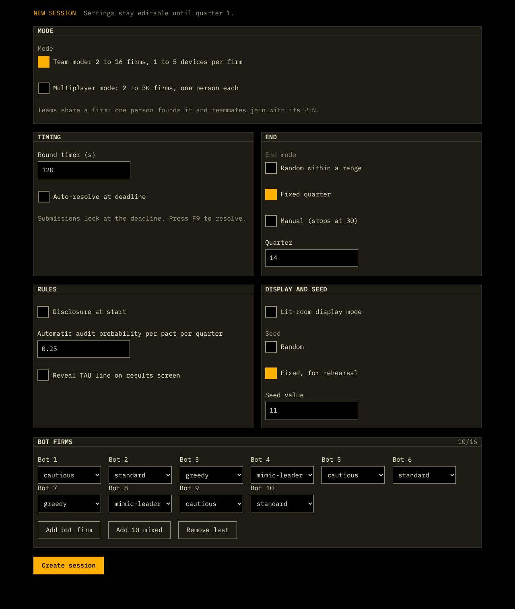
| Setting | What it does | Suggested |
|---|---|---|
| Mode | Team mode: 2 to 16 firms, 1 to 5 devices each. Multiplayer mode: 2 to 50 firms, one person each. Cannot be changed later. | Team for teams of 3 to 5 |
| Round timer (s) | Time to decide each quarter. You can add or remove 30 s during play, or pause. | 120 |
| Auto-resolve at deadline | Resolves the quarter by itself when the timer ends. Off means you press F9. | Off for a first class |
| End mode | Random within a range (hidden end between two quarters), Fixed quarter, or Manual (until you press END, or quarter 30). | Fixed, 14; or random 10 to 14 with 8 or more firms |
| Disclosure at start | Shows every firm's pace, safety and exposure from quarter 1. | Off |
| Automatic audit probability | Chance that each pact is audited by itself each quarter. | 0.25 |
| Reveal TAU line on results screen | Draws the hidden level on the results trust trace. | Off unless you plan to discuss it |
| Lit-room display mode | Larger type, stronger rules and secondary text for a bright room. | As needed |
| Seed | Random, or a fixed number to replay the same market (same hidden level and incident luck). | Random; fixed for rehearsal |
| Bot firms | Computer-run firms, tagged BOT, with a policy each: cautious (pace 1, safety 20), standard (pace 2, safety 10), greedy (pace 3 or 4, safety 5, BLITZ when allowed) or mimic-leader (copies the leader's pace when disclosure is on). "Add 10 mixed" adds ten. Bots count towards the firm limit and always commit. | Enough to reach 6 firms |
#/new. Set Round timer 30, Auto-resolve on, Fixed quarter 6, "Fixed, for rehearsal" seed 7.Check that the countdown matches on laptop and phone, that the board is readable from the back of the room, and that the results panels fit the screen.
The order of a session: create it, present the briefing deck, open the lobby so firms form, show the app's briefing screen, run the quarters, end, then step through the results and debrief. The F-keys work on the projector page (#/screen/…) and on the console; every F-key has a Shift+letter alternative for keyboards that need Fn (key map in part 6).
#/new. The projector page (#/screen/…) opens on the lobby with the join code, a QR code and the address.#/control/… with the same session id (replace screen with control in the address), or follow the CONTROL link on the wire page.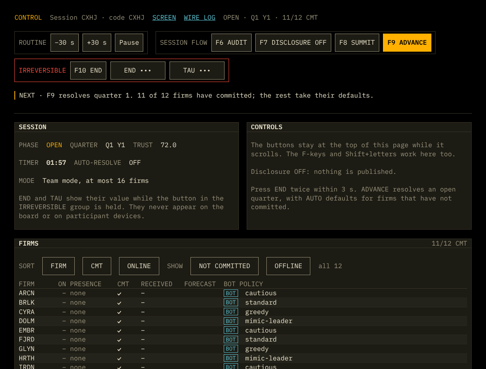
The participant briefing deck is standalone/2026-10-frontier-briefing.html in the mxtdnl/slides repository. Present it full-screen on the projector before anyone joins. Its slides, in order:
The deck predates Session 17. It lists only four cards: add SHARE ("Give every firm your safety tooling") and RUSH ("Ship early. More capability, more exposure and incident risk") aloud on the card slide, or use the app's briefing screen, which lists all six. It also lacks the spending and insolvency lines; read them from the app's briefing screen (4.4).
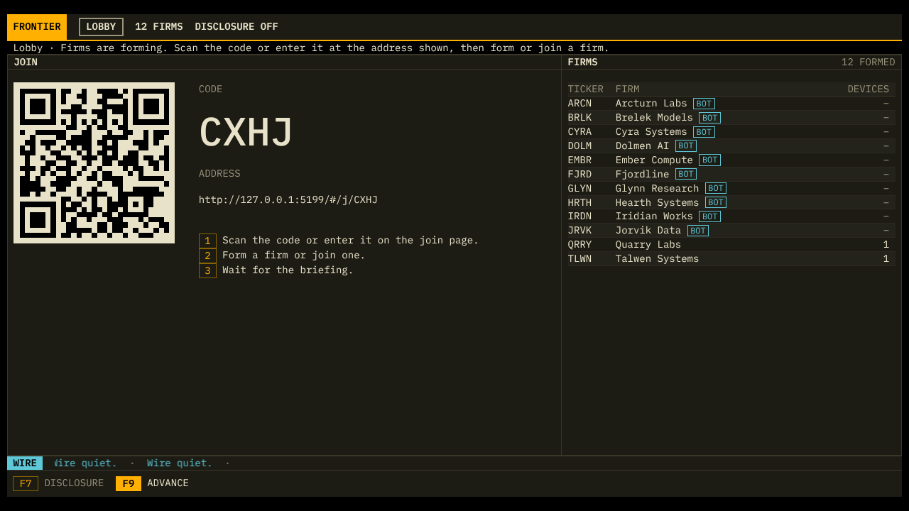
Press F9 (or Shift+A). Firm creation locks: nobody can found or join a firm after this point. The projector shows the market rules, the controls and all six cards; the phones show the same market lines. Read the MARKET column aloud, including the three spending and insolvency lines.
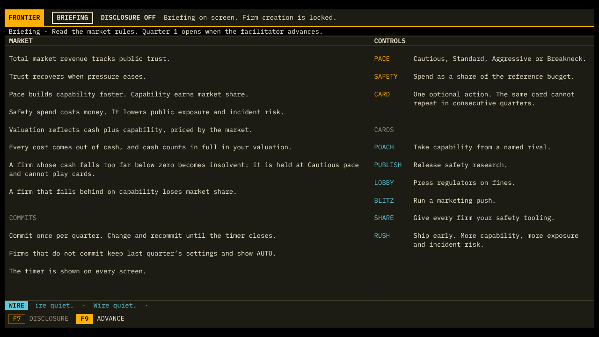
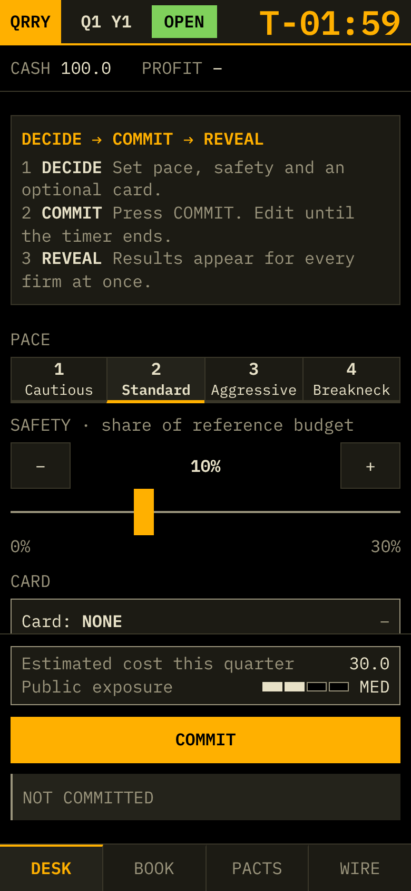
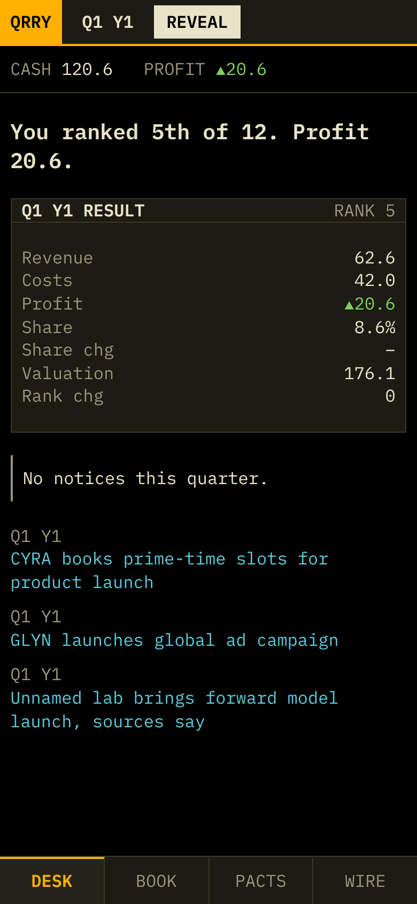
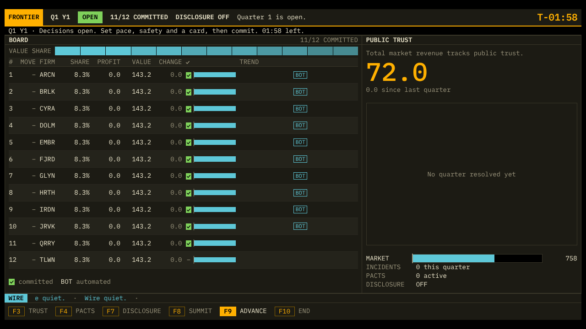
When the reveal ends, the right-hand panel lists the quarter's incidents in place of the trust chart: each firm hit, its headline, the effect ("trust −1.0 · HRTH revenue −15% this quarter") and the cause. With disclosure off the cause is only "Incident risk rises with pace and falls with safety spend."; with disclosure on it names the firm's pace, safety and incident risk. The firm's row carries a red INCID tag until the next quarter resolves. Type INCID on the projector for every incident of the session.
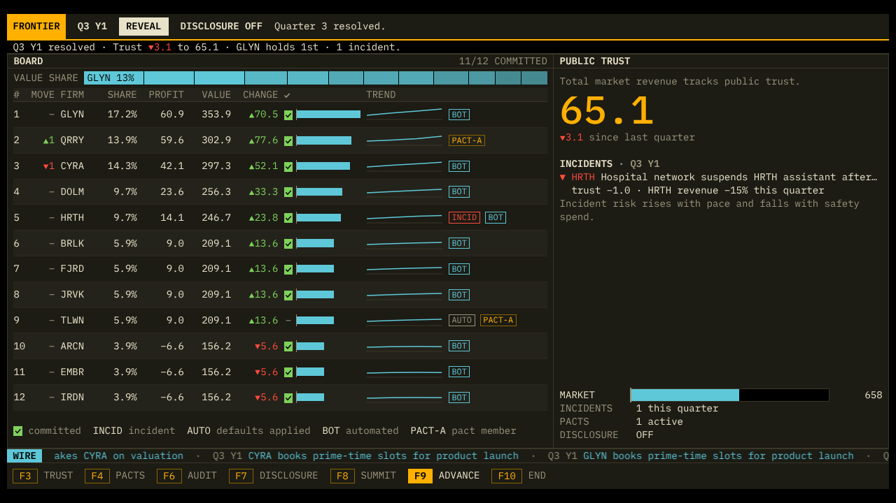
The ticker on the projector carries 2 to 4 headlines per quarter, plus pact and disclosure events. Headlines name firms for incidents, cards, rank changes, breaches and insolvency; the cap leaves some events out, and the wire log lists those under NOT ON THE WIRE. Pace 4 is reported by name only while disclosure is on ("Unnamed lab accelerates release schedule, sources say" otherwise).
Open the WIRE LOG link at the top of the console (a new tab; address #/wire/… with the same session id). Put it on a second screen or tab that the room cannot see. It lists every wire entry by quarter. Use ◄ ► or the arrow keys to change quarter, type a quarter number and press GO, or press ALL. COPY puts the selected quarter on the clipboard as plain text for the debrief.
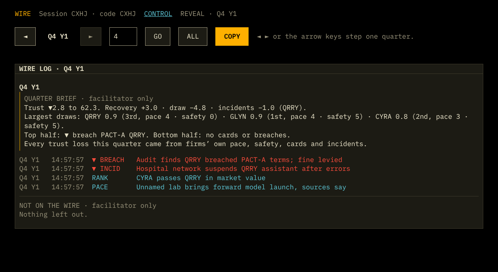
The QUARTER BRIEF sits at the top of every resolved quarter. It is for you only and never appears on the projector or a phone. It shows, even while disclosure is off:
Use it to see the story of the session as it builds: which firms at the top are drawing the most trust, and whether the rest of the board starts to copy them. Keep it to yourself during play; it becomes debrief material once the results open.
Press F8 during an open quarter or a reveal. The timer pauses, decisions are refused, and every phone opens its PACTS tab under one summit banner. Firms propose, join and leave pacts. Press F8 again to return. Suggested use (a judgement, not a measured result): once trust has visibly fallen for a few quarters, or after the first breach is published, for 2 to 4 minutes.
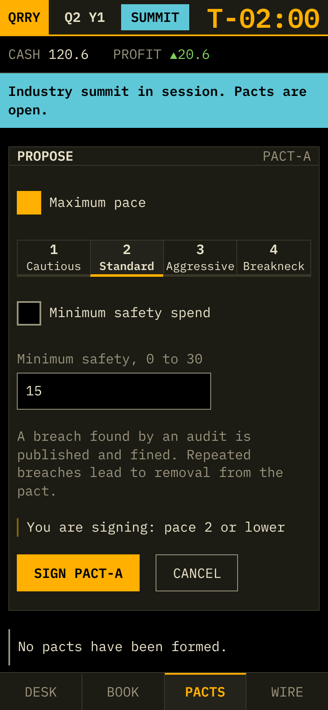
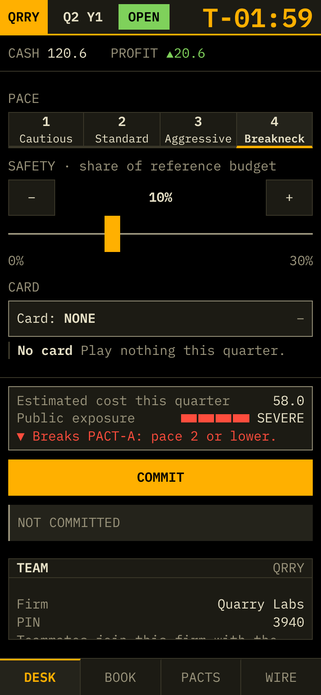
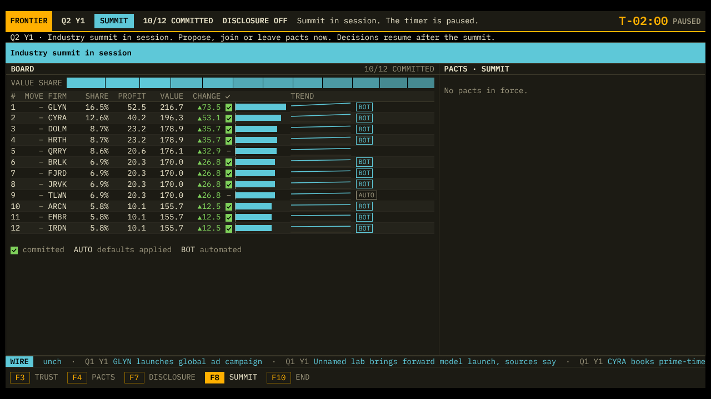
Press F6, then the number of the pact. The audit runs when the quarter resolves and checks up to the last 3 unaudited quarters. A breach is published on the wire, fined and tagged BREACH on the board; a clean audit is published too. Automatic audits run at the probability you set. Suggested use: when the QUARTER BRIEF shows a member racing past its pact's terms, or to show the room that monitoring exists; not every quarter, so the room still has to choose.
Press F7 to publish every firm's pace, safety and exposure from the next resolution, with columns on the board. Turning disclosure on for a few quarters in the middle of a session (for example quarters 4 to 9) gives the debrief a before and after: did firms change when their decisions became visible?
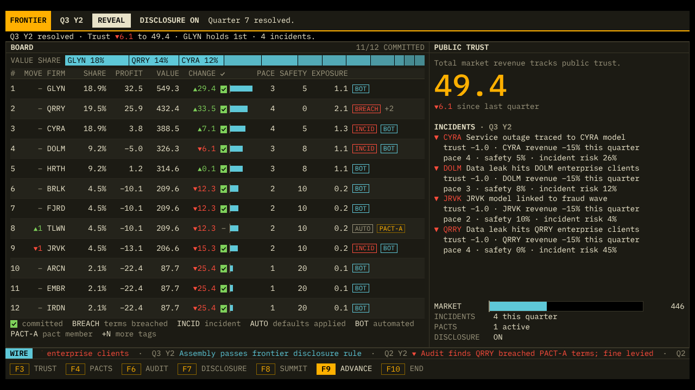
On the console: −30 s and +30 s change the deadline, Pause stops the timer, Resume restarts it. Pause for a question, a technical problem, or to let a team finish founding.
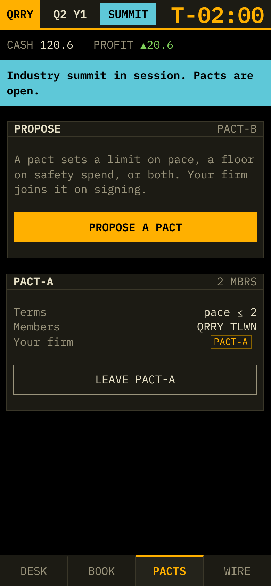
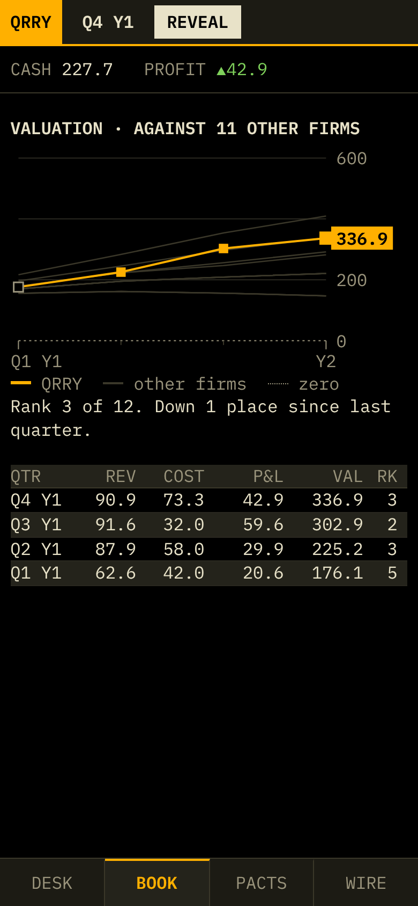
| Phase | Say | Do not say |
|---|---|---|
| Deck and lobby | The deck's script. "Found one firm per team." | Anything about what the session teaches; how many quarters. |
| Briefing | The briefing lines, word for word. "Maximise your firm's valuation." | "Protect trust", "work together", "don't race"; any level or limit. |
| Open quarter | Time left; how many firms have committed; "you can change until the timer ends". | Advice on pace, safety or cards. |
| Reveal | The status line and the headlines; who moved up; trust's new value. | "Bad luck", "that was reckless", "you're ruining it". |
| Summit | "Pacts are open." The pact rules if asked: terms, audits, fines. | Which terms to sign; that pacts are the answer. |
| Moratorium | The headline. "The market is now much smaller. The session continues." | "You crossed the threshold." Who caused it. |
| Results | Everything: the lesson, the words, the QUARTER BRIEF notes. | Blame aimed at named students; keep it on firms and decisions. |
Questions you may get, with true answers that give nothing away:
The session ends by itself at the end quarter (fixed or hidden), or after quarter 30 in manual mode. To end early press F10 (or Shift+E) twice within 3 seconds; a single press only arms it. Ending during an open quarter discards that quarter. Then press F9 to open the results. On the console, download both exports (history and DATA lines) before you delete anything.
Allow 20 to 30 minutes. On the projector, F9 steps forward and Esc steps back; the step is saved, so a reload returns to the same panel. Every panel opens with one bold sentence written from the session's data. Read it out, then ask the room. Participants see their own results card on their phones. From here on you may name the lesson.
The screenshots below come from the staged practice session: 12 firms, 14 quarters, the moratorium in quarter 13.
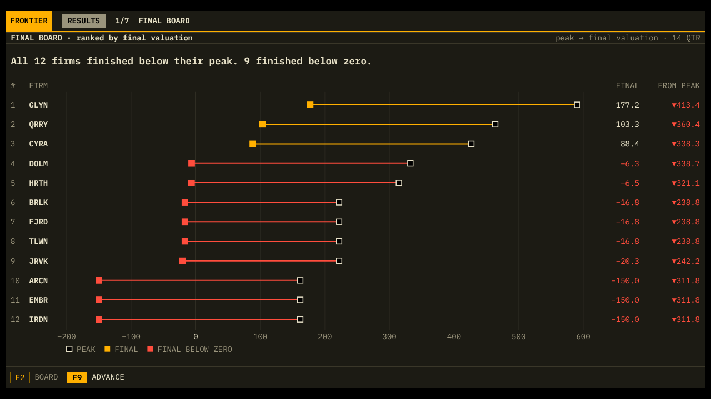
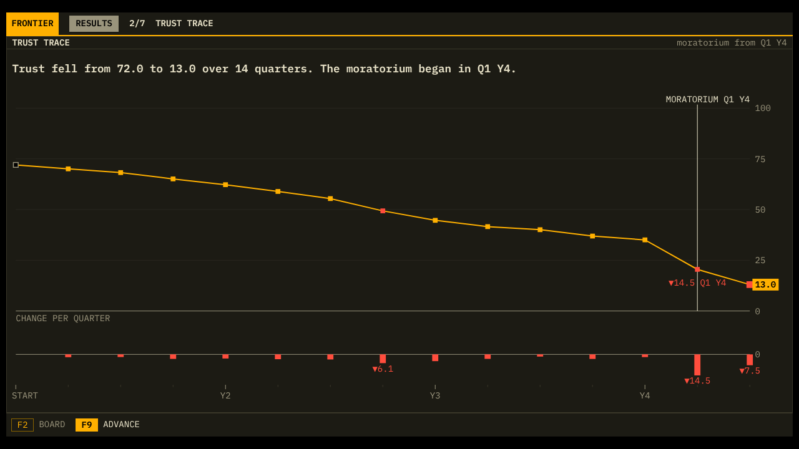
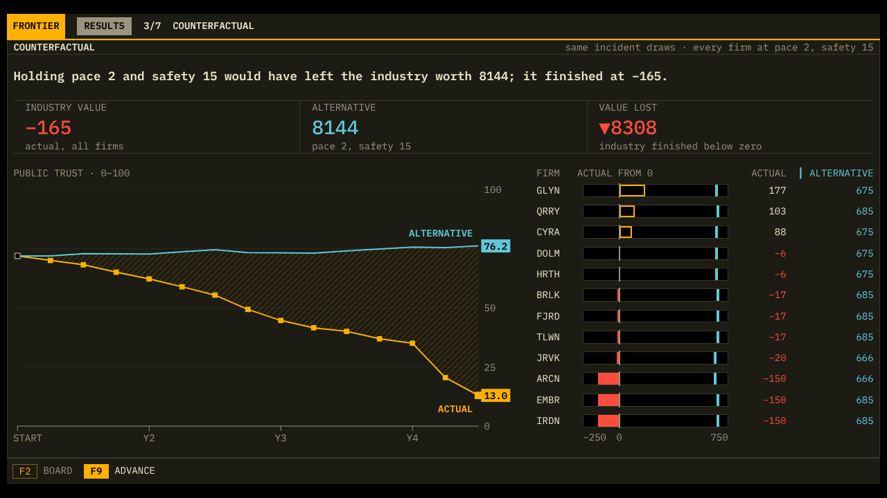
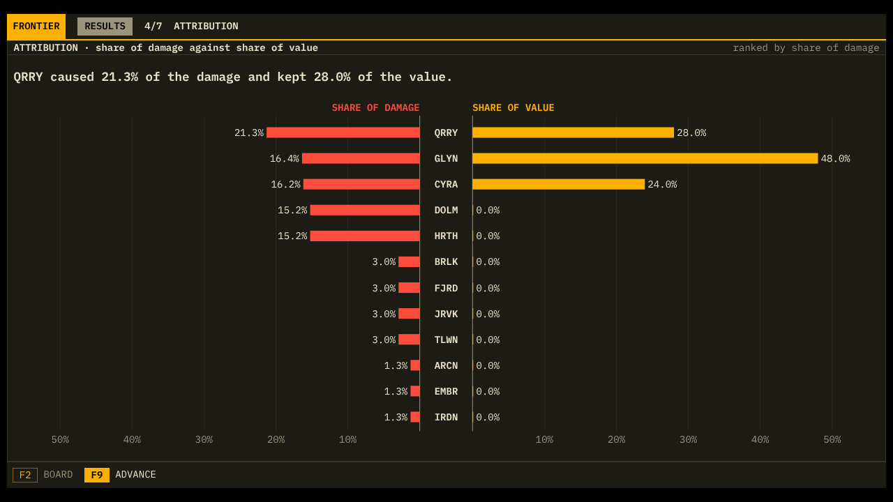
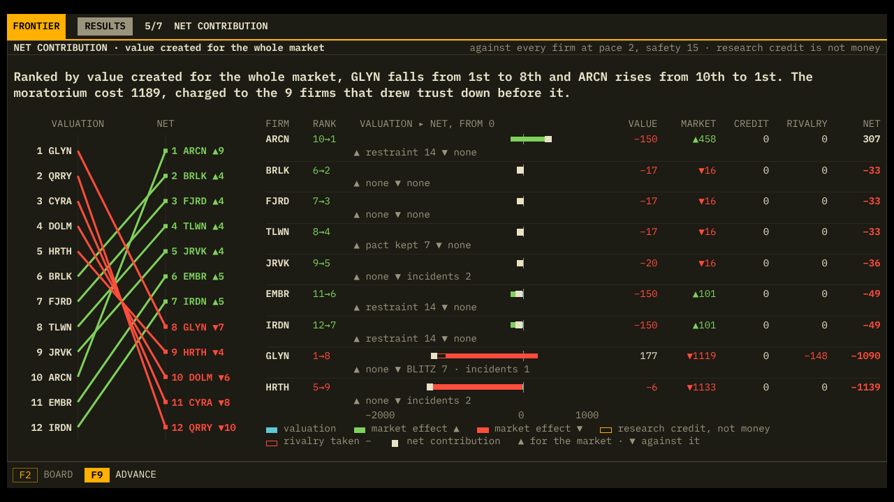
Net contribution re-ranks firms by what they did for the whole market, not only for themselves: final valuation, plus or minus what the firm's decisions did to every firm's revenue through trust (against pace 2, safety 15, no card), plus a research credit for each PUBLISH card, minus value taken from rivals with BLITZ, POACH and RUSH. The moratorium's cost is charged to the firms that drew trust down before it.
This is where the board turns around. In the staged session the valuation leader, GLYN, falls from 1st to 8th, and ARCN, 10th by valuation after 14 restrained quarters, rises to 1st. In the four October 2026 live rooms the valuation leader fell to between 5th and 9th (docs/SESSIONS.md, Session 18). It depends on the room: in a calm room with no moratorium an aggressive firm can still rank high (observer report, section 3, finding 4).
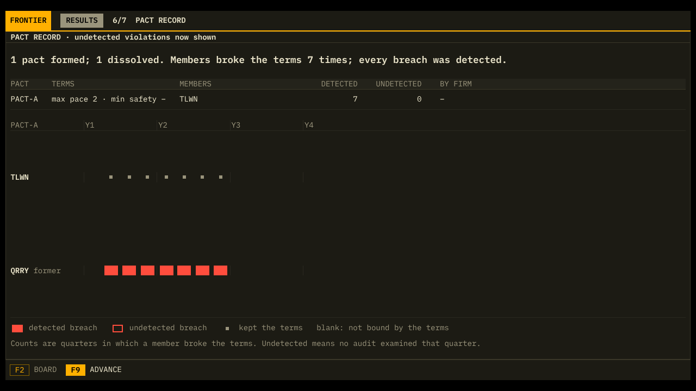
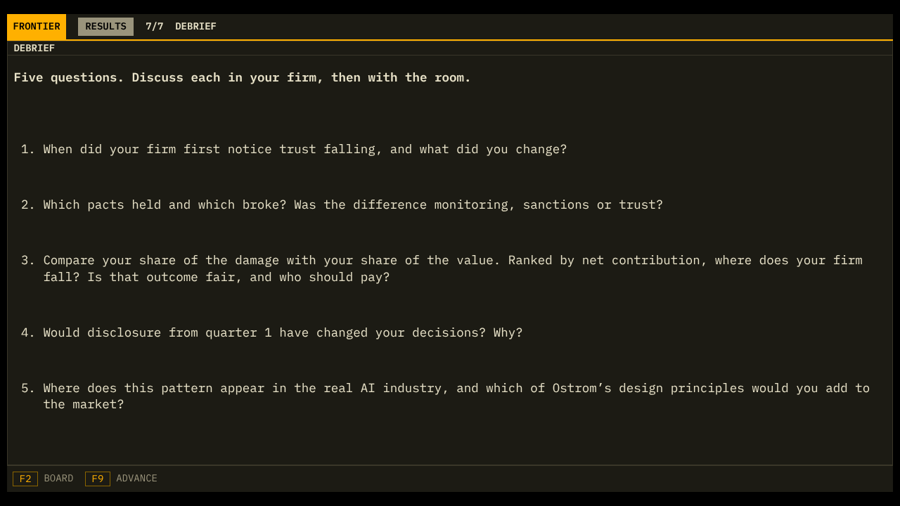
No record of what live rooms answered is kept in the repository. The answers below are what the session's own data and model support; use the panels to get the room there.
Return to the opening claim tally from the deck ("Speed to market matters more to a firm's value than safety spend."): did the room's view change?
| What you see | What to do |
|---|---|
| The projector page was refreshed or the laptop slept | Reload and sign in if asked. The quarter, countdown and ticks come back from the database. Nothing is lost. |
| Two windows open for the same session | Safe. F9 in both resolves a quarter once; the second press is refused. |
| Console says "Resolution incomplete — retry" | Press Retry resolution once. Nothing was written, so nothing is half-saved. |
| Results do not appear after the session ends | The console shows "Results are not written yet". Press Retry results and check the connection. |
| A team says "Joining is closed" | Joining closes at the briefing. A team that missed the lobby cannot be added; a device already in a firm can always reconnect. |
| A phone shows "Offline. Reconnecting automatically." | It reconnects by itself; the last commit is kept. |
| A phone clock is wrong | Not a problem: the countdown uses the server clock. |
| A team did not commit in time | It receives its defaults, marked AUTO, and the quarter proceeds. |
| You pressed END by mistake | One press only arms it for 3 seconds. A second press ends the session and cannot be undone. |
| An unknown firm or device appears in the lobby | Press REMOVE on that firm, ask the team to found it again with a new PIN, then press LOCK JOINS. |
| More firms than the mode allows, so F9 refuses to start | REMOVE the extra firms, starting with those whose PRESENCE reads none. |
| Multiplayer: someone's phone died | On another phone: type the code, Rejoin your firm with its PIN, pick the ticker, enter the PIN. |
| "Another device is joining this firm. Wait a few seconds and try again." | Teammates joined in the same second. Press Join the firm again; LOCK JOINS once every team has formed. |
| "Anonymous sign-in is switched off for this project" | Enable Anonymous sign-in in the Firebase console (RUNBOOK §1, step 2). |
| A key press shows "Working on the last key. Press again in a moment." | The previous action is still finishing. Wait a second and press again. |
| Anything else | Reload the page. If a quarter is stuck in RESOLVING, use Retry. |
Never ask a participant to read out a hidden value. The projector and phones never show the hidden level, the end quarter or unaudited breaches.
On the projector page and the console. Every F-key has a Shift+letter alternative. F1, F5, F11 and F12 are never used by the app, so the browser keeps them.
| Key | Alternative | Action |
|---|---|---|
| F2 | Shift+B | Board |
| F3 | Shift+T | Trust history |
| F4 | Shift+P | Pacts |
| F6 | Shift+F | Audit a pact (then the pact's number) |
| F7 | Shift+D | Disclosure on or off |
| F8 | Shift+S | Summit in or out |
| F9 | Shift+A | Advance: lobby → briefing → quarter → resolve → reveal → next quarter; after the end, opens and steps the results |
| F10 | Shift+E | End the session (press twice within 3 s) |
| Esc | Back to the board; on the results, one panel back |
Start typing on the projector and the command line appears in the top bar; press Enter.
| Command | Shows |
|---|---|
BOARD | The board |
TRST | Trust history |
PACT | The pact table |
WIRE | The wire headlines |
FIRM <TICKER> | One firm's history |
FIRMS | One small chart per firm on the same scale |
RANKS | Every firm's rank by quarter |
INCID | Every incident of the session |
HELP | The commands and keys |
| Address | Who | Purpose |
|---|---|---|
#/ | Anyone | Landing page: type the code, or Facilitator sign-in |
#/j/:code | Participants | Join: found or join a firm |
#/play/:gameId | Participants | The phone: DESK, BOOK, PACTS, WIRE |
#/screen/:gameId | Facilitator | The projector board, with the keys |
#/control/:gameId | Facilitator | Private console: timer, firms, pacts, hidden values, exports |
#/results/:gameId | Everyone in the session | Results: the seven panels on the projector; each firm's own card on its phone |
#/new | Facilitator | Create a session |
#/wire/:gameId | Facilitator | The wire log by quarter, with the QUARTER BRIEF and NOT ON THE WIRE |
#/new: settings, at least 6 firms (add bots), Create session.#/control/…. Wire log in a second tab.commons, tragedy, sustainable, sustainability, cooperate, cooperation, collective, shared resource, tipping point, threshold, collapse, game, player, score, win, level
Never say the goal is public trust. Never hint at a hidden level or the number of quarters. Never call conduct good or bad. The aim, if asked: "Maximise your firm's valuation."
| Key | Alt | Action |
|---|---|---|
| F2 | Shift+B | Board |
| F3 | Shift+T | Trust |
| F4 | Shift+P | Pacts |
| F6 | Shift+F | Audit, then pact number |
| F7 | Shift+D | Disclosure |
| F8 | Shift+S | Summit |
| F9 | Shift+A | Advance |
| F10 | Shift+E | End (twice) |
| Esc | Board; results back |
Commands: BOARD, TRST, PACT, WIRE, FIRM <TICKER>, FIRMS, RANKS, INCID, HELP.
▼ POACH · ▲ PUBLISH · ▼ LOBBY · ▼ BLITZ · ▲ SHARE · ▼ RUSH · NONE
Reload the page: nothing is lost. RESOLVING stuck: Retry on the console. Results missing: Retry results.
1 FINAL BOARD · 2 TRUST TRACE · 3 COUNTERFACTUAL · 4 ATTRIBUTION · 5 NET CONTRIBUTION · 6 PACT RECORD · 7 DEBRIEF